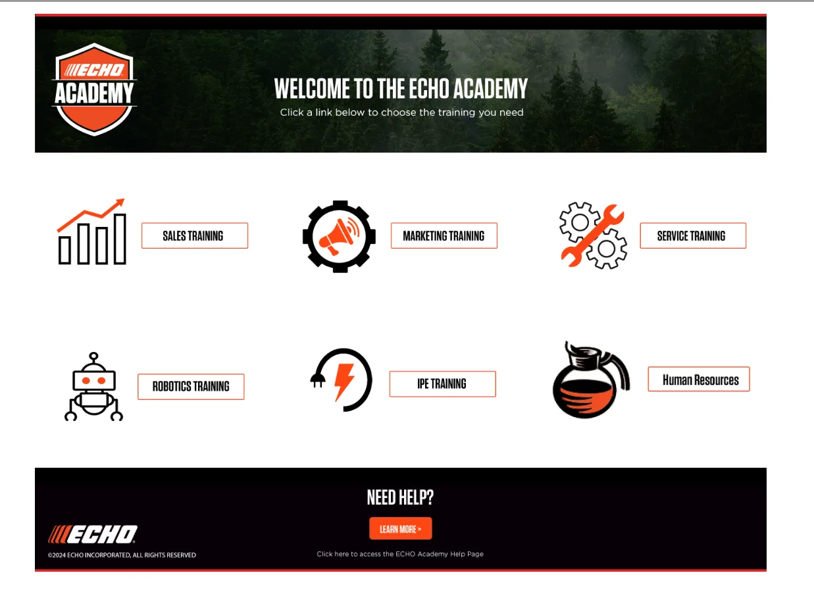
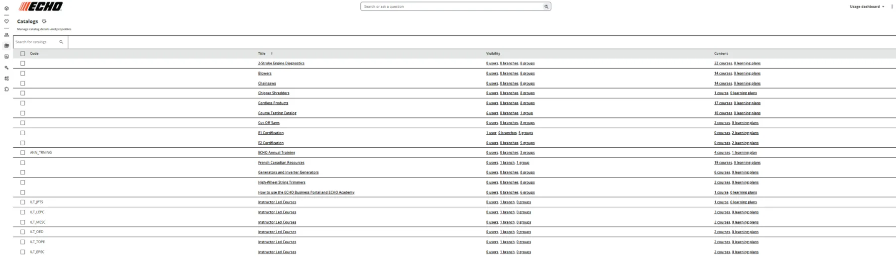
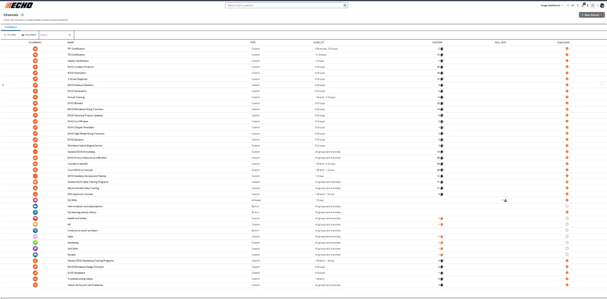
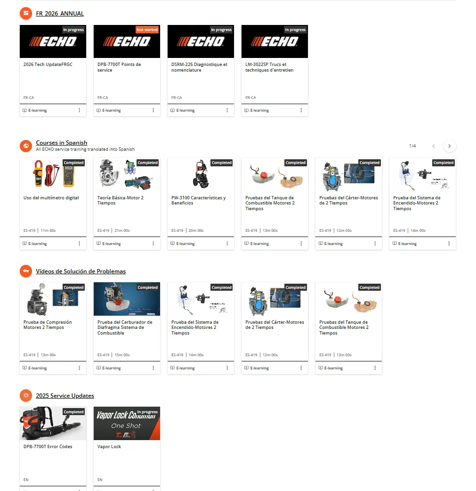
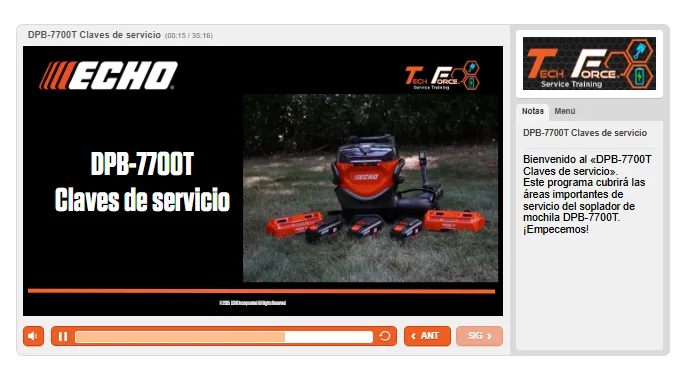
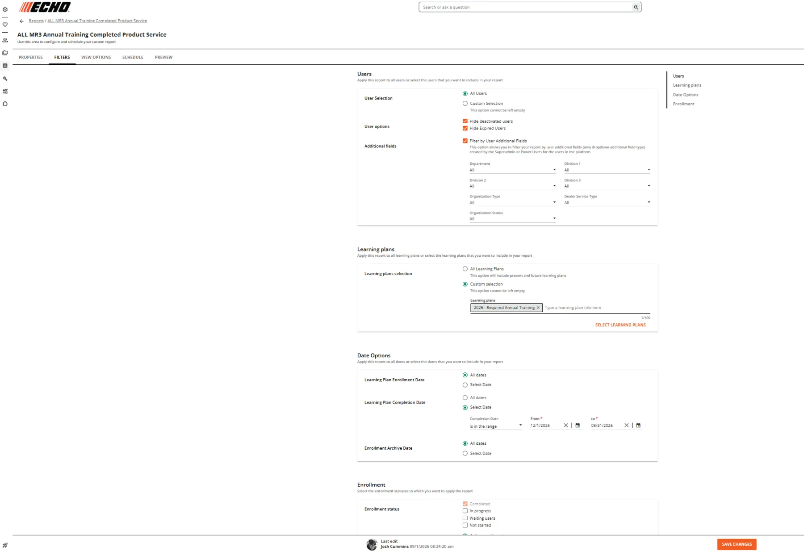
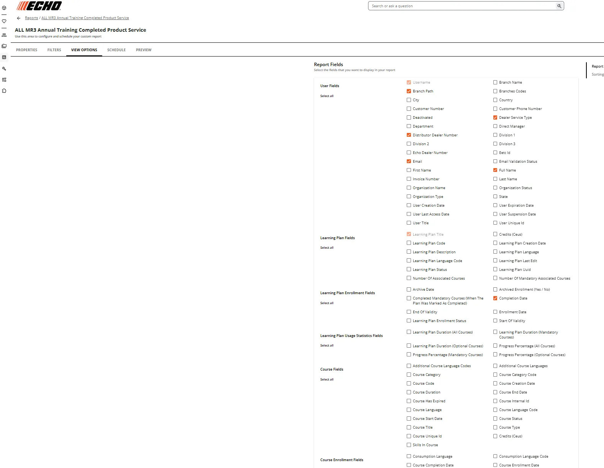

ECHO Academy
Operating and evolving a large-scale technical learning environment for a distributed dealer, service, sales and employee audience.

The challenge
ECHO Academy has to support different technical experience levels, business roles, organizational structures, languages, certification requirements and delivery formats while remaining understandable to the learner and operable for the organization.
What I own
My work spans platform administration, learning architecture, learner segmentation, reporting and analytics, certification pathways, multilingual content operations, blended learning, gamification, course organization and learner-experience design.
Architecture at scale
Branches, attributes, catalogs, channels, learning plans and reporting structures translate organizational complexity into targeted learner experiences.


Enterprise programs
Major learning plans can reach nearly the entire active learner population. Examples include 2026 Required Annual Training with 16,828 enrolled learners, TF1 Certification with 16,660, and 2026 Sales Update Certification with 16,006.
Multilingual operations
The academy supports English, French, Spanish and Portuguese learner populations. The Spanish troubleshooting learning plan alone showed 11,445 enrollments in the October 2026 export.


Reporting as infrastructure
Custom reporting combines user attributes, organizational hierarchy, course and learning-plan status, completion dates, dealer/service type and other fields to answer operational questions—not simply produce exports.


Portfolio note: screenshots and metrics are presented as dated examples of work and system scale. Public versions intentionally omit learner-list PII. Company trademarks and platform interfaces remain the property of their respective owners.
See how the pieces connect.
Explore the broader portfolio or use the career brief for a concise view of experience and role fit.